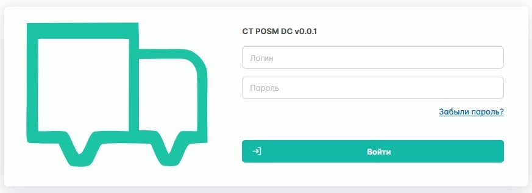
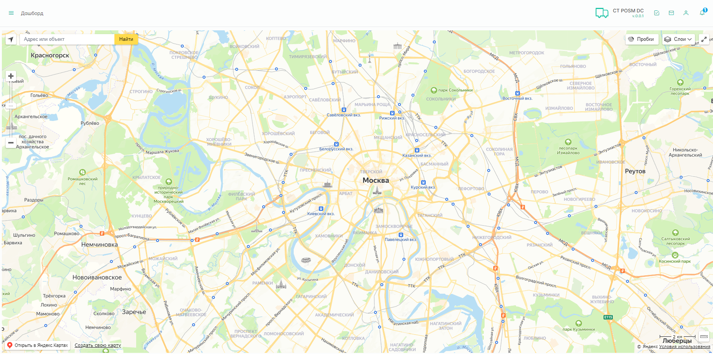
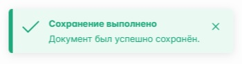

hide: - navigation
markdown_extensions: - toc: title: On this page
Руководство пользователя Башни
В этой статье описаны функциональные возможности Контрольной Башни.
Начало работы
Авторизация
Чтобы войти в Башню, перейдите по ссылке. Панель управления — система с авторизованным доступом, поэтому первое знакомство с ней начнётся с формы авторизации.

В форме авторизации введите свои учётные данные — логин и пароль. В случае утери пароля можно воспользоваться функцией восстановления доступа.
Успешный вход
После успешной авторизации система запомнит вас и повторный ввод данных не потребуется, если вы используете то же устройство и браузер.
Обзор интерфейса
После того как вы войдете в панель, появится главный экран с картой Москвы. Нахуя он нужен?

Панель инструментов
В верхней части экрана расположены два элемента управления: слева «спрятана» боковая панель, а справа находится панель быстрого доступа. Чтобы открыть боковую панель, нажмите на кнопку возле надписи "Дашборд".
Панель быстрого доступа содержит часто используемые кнопки:
- Задачи
- Сообщения
- Личный кабинет
- Уведомления
Дублирующиеся элементы
Созвучные кнопки ведут на одни и те же страницы. В раздел «Сообщения» можно попасть как из боковой панели, так и из панели быстрого доступа.
Заказы
В боковой панели нажмите на «Заказы». Перед вами окажется таблица со всеми раннее созданными заказами.
Чтобы расположить элементы таблицы в порядке возрастания или убывания, нажмите на название колонки один раз.
Чтобы отобразить заказы с определёнными характеристиками, воспользуйтесь функцией фильтрации. Для этого нажмите на кнопку рядом с названием нужной колонки и выберите необходимые параметры. Вы можете настроить фильтр по любым доступным критериям.
Создание нового заказа
Для создания нового заказа нажмите на в левом верхнем углу страницы. Откроется окно создания заказа. На вкладке Основное заполните поля:
- Рабочее наименование
- Клиент
- Описание заказа
- Бренды
- Планируемые даты старта и финиша
Типы заказов
Заказы на первичном этапе создания бывают двух типов: проектные и интеграционные. Проектный заказ собственноручно наполняется менеджером в Башне, а интеграционный поступает из Личного кабинета по API и создаётся автоматически.
После заполнения основных полей нажмите на кнопку Сохранить.

После успешного сохранения заказа перейдите во вкладку «Мероприятия»
Мероприятие — это действие компании для выполнения и контроля заказа и его частей: услуг, задач и операций. Оно охватывает все этапы процесса, необходимые для успешного завершения заказа: взаимодействие с клиентом, организацию и координацию ресурсов, а также контроль выполнения задач.
Первое проводимое мероприятие — загрузка адресной программы (в дальнейшем АП). Чтобы «провалиться» внутрь мероприятия, дважды нажмите левой кнопкой мыши на любую строку. Откроется окно выбранного мероприятия, где по нажатию кнопки Начать выполнение статус мероприятия сменится на В работе, а раннее размытая часть экрана станет доступна.
Загрузите АП
Для начала необходимо выбрать вид работ:
- Монтаж
- Демонтаж
- Ремонт
- Доставка
После выбора вида проводимых работ загрузите файл адресной программы, нажав на кнопку Выберите файл(ы). Вы также можете скачать шаблон адресной программы, нажав на кнопку Скачать шаблон АП, у каждой компании он свой.
После загрузки АП, снизу появится предпросмотр загруженного вами файла. Если всё в порядке, нажмите кнопку Завершить. При соблюдении всех требований мероприятие перейдёт в статус Завершено.
Проверьте АП
Теперь во вкладке «Мероприятия» появилась строка названием «Проверка АП». Откройте её и нажмите кнопку Начать выполнение. Проверьте адреса из загруженного раннее файла, при необходимости внесите изменения. Нажмите кнопку Завершить.
Ошибка валидации
Если хотя бы в одном адресе будет отсутствовать информация о городах, то система не позволит завершить мероприятие и укажет количество пустых адресов.
Проверьте оборудование
Проверьте и сопоставьте оборудование из загруженного раннее файла.